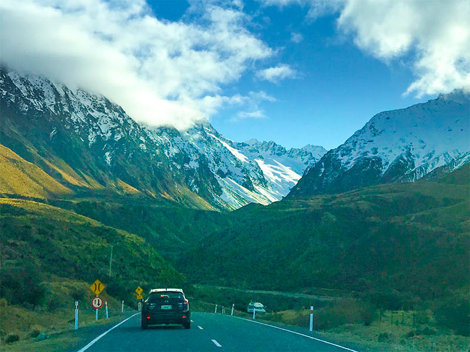

Viagem e Descoberta
Viajar nos permite sair da nossa rotina e explorar novas culturas, paisagens e sabores. Cada nova jornada é uma oportunidade de aprender algo sobre o mundo e, mais importante, sobre nós mesmos. É a chance de criar memórias que durarão a vida toda.